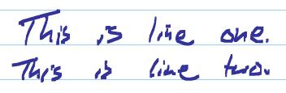
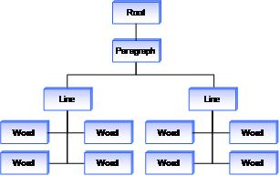
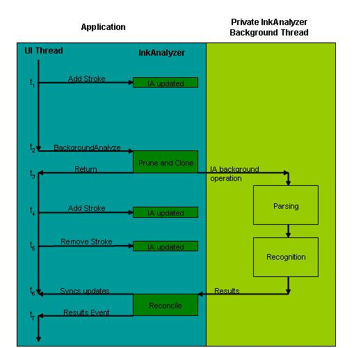

The InkAnalysis APIs provide Tablet PC developers with powerful tools to programmatically examine ink input. The API classifies ink into meaningful categories such as words, lines, paragraphs, and drawings.
You can use each classification in a variety of ways, including improving recognition results for handwriting.
This section introduces the Tablet PC Platform ink analysis technology and explains when and how to use it.
The InkAnalysis APIs effectively combine two distinct but complimentary technologies: handwriting recognition and layout classification. Combining these two technologies gives definitively greater results than the parts taken alone.
Handwriting recognition is the computational analysis of handwritten digital ink to return character-based interpretation in a given language. That is, handwriting recognition is how the computer "reads" a person's handwriting.
Ink Analysis can be further broken down into ink classification and layout analysis. Ink classification is the computational division of ink into semantically meaningful units such as paragraphs, lines, words, and drawings. Layout analysis is the computational examination of ink input to determine the position of the ink on the inking surface and how the strokes relate to each other spatially and even semantically. For example, layout analysis can tell you that a particular piece of ink is an annotation or a call out.
One example of how the combination of recognition with ink analysis in the InkAnalysis API helps the developer is the improvement in recognition results. The Tablet PC handwriting recognition engines have been primarily designed to recognize a single horizontal line of ink. However, people tend to write multiple lines when taking notes, and those lines are not guaranteed to be horizontal in relation to the page. With the InkAnalysis API, ink is preprocessed by the ink analyzer before being sent to the recognizer. The analyzed ink is transformed to horizontal before being recognized, improving the recognition results.
Other benefits to recognition are derived by having the ink analyzer correct incorrect stroke order information before sending the ink to the recognizer. Further, recognition results are now available in a selective manner. That is, the developer can quickly retrieve the recognition results for a single word, line, or paragraph in one call.
There are, of course, a variety of scenarios in which you may to keep the ink data intact, rather than converting it immediately to text. Ink analysis provides benefits here as well. Specifically, the InkAnalysis APIs provide the ability to split ink strokes according to whether they are writing or drawings. Ink strokes that are classified as writing are those that make up a word or characters. All other strokes are drawings. This provides you with a new way to access ink data, enabling new user scenarios. For instance, you may implement selection so that it is different based on which type of stroke the user taps on; if a user taps a writing stroke, the application selects the entire set of strokes that compose the word, if the user taps a drawing stoke, the application selects only that stroke.
Useful layout analysis actually goes far beyond the relatively simple breakdown of ink into writing and drawing components.
Ink analysis also includes a richer breakdown of the writing and drawing strokes. As a very simple example, take a blob of ink as shown in the following illustration.

After the platform has analyzed these strokes, it returns a tree representation of these strokes as shown in the following illustration. For this simple case, the tree contains only paragraph, line, and word information, but the richness of this tree increases as the complexity of the ink document increases.

Because this information is now separated into manageable units, you can now create more powerful features. As an example, the application can extend the feature in which the user taps to select a word into a feature in which the user taps once to select the word, taps twice to select the entire line, and taps three times to select the entire paragraph. By leveraging the tree structure returned by the analysis operation, the application can relate the tapped area back to a stroke in the tree. After the application finds a stroke, it can walk up the tree to determine how and which neighboring strokes to select.
Selecting an entire line is a simplistic example of the benefits of ink analysis, but the possibilities become great when one considers the different types of hierarchical structures the ink analyzer is capable of detecting:
The types of features vary from application to application and are based on requirements and the available ink analysis and recognition engines.
The key capabilities of the InkAnalysis API include the following features:
When end users work with ink, they usually treat it like handwriting. The ink is continually subject to editing operations such as the addition of new ink, deletion of existing ink, and the modification of ink properties, all done in the same way that handwriting is continually edited. These editing operations affect the analysis results. When edits occur, they can usually be isolated to sections of the document at specific points in time. For example, assume a user writes five lines of ink. The standard way that applications analyze ink is to wait until the user has finished writing all five lines of ink—a paragraph, for instance—and then analyze the results, either synchronously or asynchronously.
You can optimize the overall time spent analyzing these five lines by isolating the areas that are analyzed as they are being written, and then reanalyzing only the parts of the results that have changed. After the first line is analyzed, it will never be recognized again unless it is modified by the end user. Recognition of the second line is treated as an independent recognition operation.
This incremental approach works well at the line level for the recognition operations, but it needs to work at a higher level for the ink analysis operation. Because the ink analyzer can detect different higher level classifications for these five lines of ink (for example, it could be a standard paragraph or five items in a list), the incremental approach for the ink analyzer is that it has to analyze these higher structures. That is to say, after the ink analyzer classifies the first line of ink as a line, it double-checks that it is still a line when it classifies the second line. However, the ink analyzer isolates this double-checking to the paragraph and ignores the first paragraph when analyzing a second paragraph, treating the second paragraph as an independent ink analyzer operation. This incremental approach to analysis dramatically saves processing time when large amounts of ink already exist in the application.
Incremental analysis works well within a given session or instance of an InkAnalyzer object. However, the first generation Tablet PC Platform APIs cannot perform incremental analysis after the ink is persisted to disk. The InkAnalysis API enables saving ink to disk along with a persisted form of the analysis results. The analysis results can be loaded when the ink is loaded and can be injected into a new instance of an InkAnalyzer. A new instance of the InkAnalyzer object then has the same results state it previously had and can now accept any modifications as incremental changes to the existing state, rather than analyzing everything again.
Many applications already have some sort of existing document structure in their applications; for instance, a graph or a database. The InkAnalyzer also presents results in a structured form, in a tree of ContextNode objects. The InkAnalyzer structure and the application's existing structure need to interoperate in two directions: results are pulled from the InkAnalyzer into the application and state is pushed from the application into the InkAnalyzer.
If pulling the results from the InkAnalyzer into the application's structure were all that was needed, it would be relatively simple. Applications would iterate through the results tree and copy (integrate) all pieces of the results they need into their existing data structure. However, because many horizontal applications require incremental analysis and persistence to disk, the problem becomes two-directional. State (past results) needs to be pulled from the application's structure and pushed into the InkAnalyzer.
To meet this requirement, the InkAnalyzer contains a series of events that it raises at the appropriate time during an analysis operation to allow applications to proxy the request for data back to their existing structures. These events are raised only for those ContextNode objects required by the incremental operation.
Most applications will want to analyze the ink in the background to keep user interface interruptions to a minimum. Analyzing ink in the background causes problems, however, if the user changes the ink (or neighboring ink) that is being analyzed. For example, if the user deletes the ink during the background operation, the resulting structure would reflect the state of the document when the background operation started, rather than when it was completed.
To assist applications, the InkAnalyzer reconciles the differences in document state between the beginning and end of the analysis operation. Changes made by the user or application while the analysis is running in the background always override the results calculated in the background. After reconciliation, only the parts of the results structure that do not conflict with document changes are reported, and the conflicting strokes are tagged for future analysis. The next time the background analysis operation is run, the results are recalculated based on the new state.
The following diagram shows this process. Time is expressed linearly from top to bottom in the diagram.

The InkAnalysis APIs allow new types of analysis engines to be used by applications, in such a way as to prevent the application from having to rewrite all of the benefits of the InkAnalysis API, including reconciliation, data proxy, persistence, and incremental analysis.
Â
Â